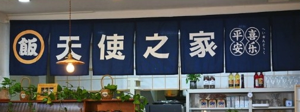
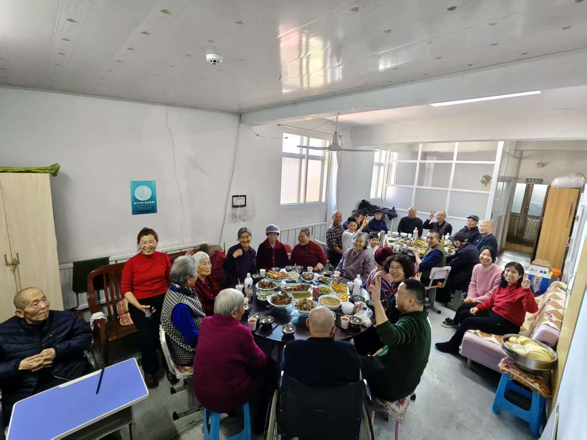
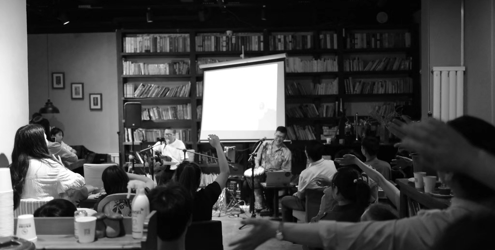

在世界不同角落， 仍有人默默用爱同行。 他们正在陪伴孩子、照顾老人、 为陌生人预备热饭， 也在黑夜里继续点灯。

他们，始终搀拉陪伴， 凭着爱心帮助来自“星星”的孩子们。 一间小食堂， 每一口饭菜， 都能品出人间的温暖。

他们正在以步行道， 让农村老人不再孤单地老去。 从第一个人开始， 直到如今最多时二十多人， 穷尽所有， 只因祂有数算不尽的恩典与祝福。

开始于2004年5月18日的房角石书房， 走过22年了，独资商业项目。 努力有限的资源， 合法范围服务社区。 线上线下，读书会，音乐会，电影会， 经营咖啡餐饮项目自养。